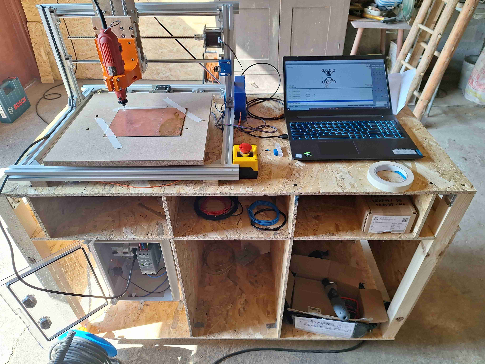
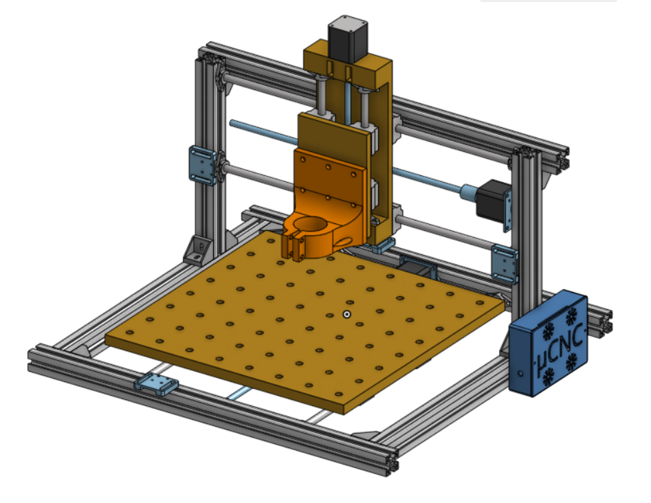
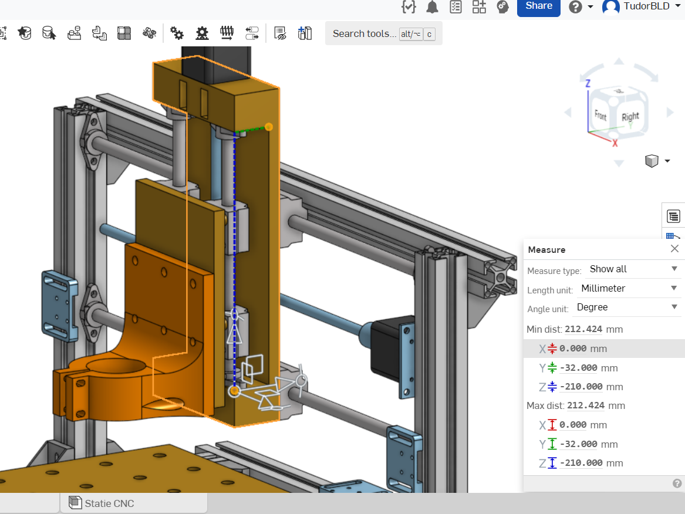
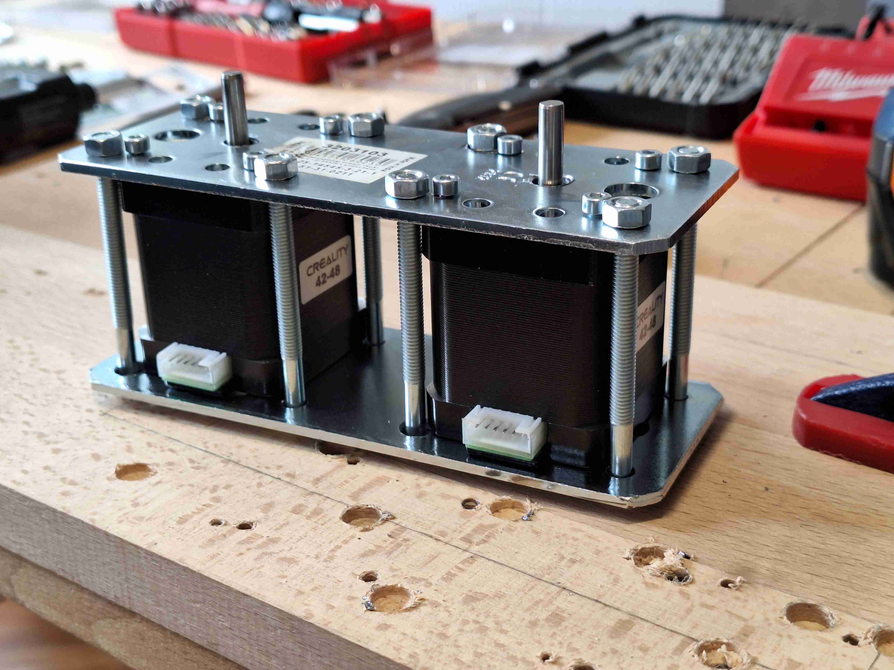
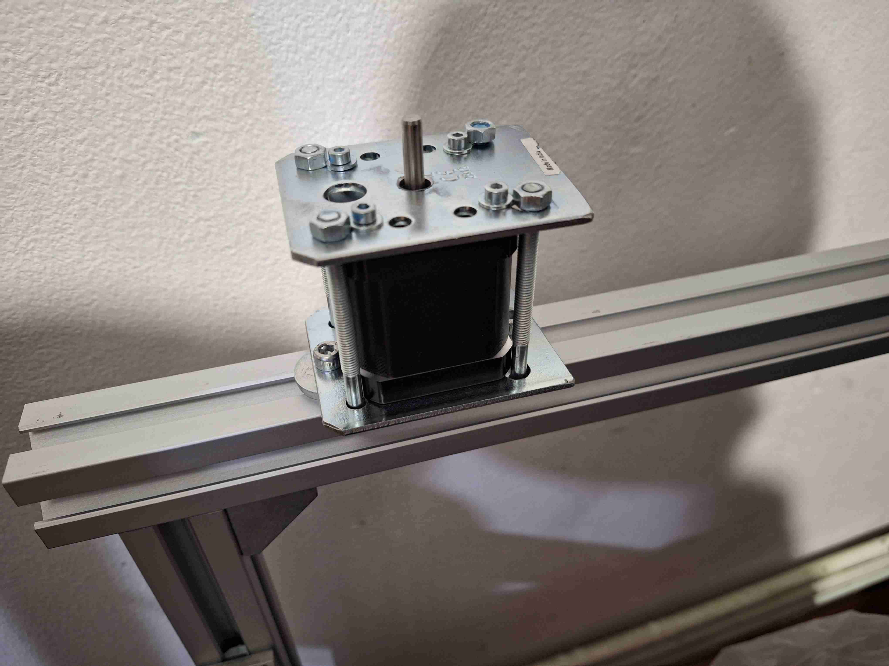
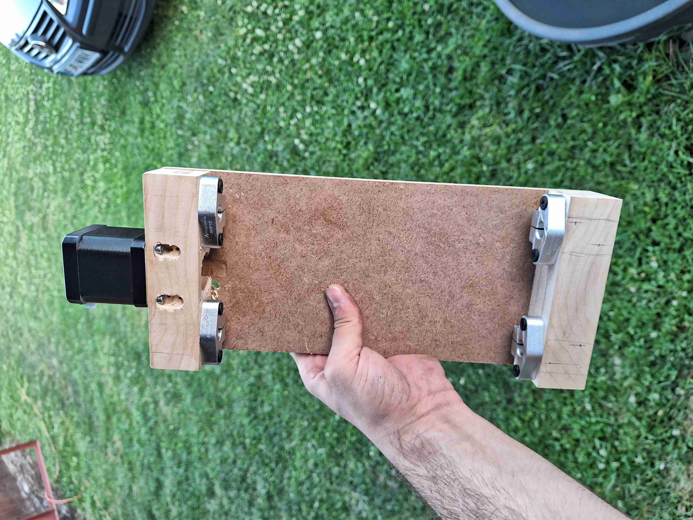
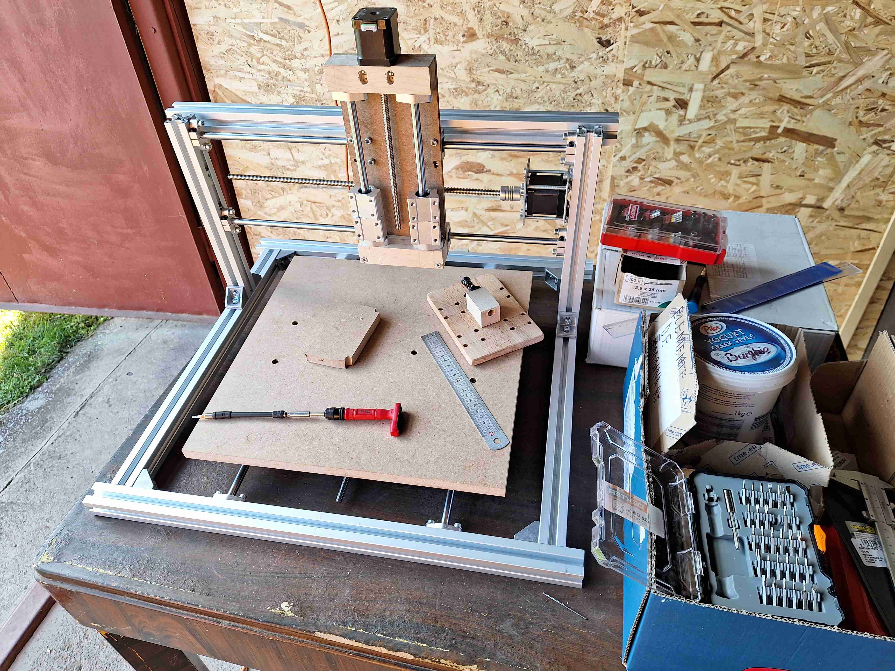
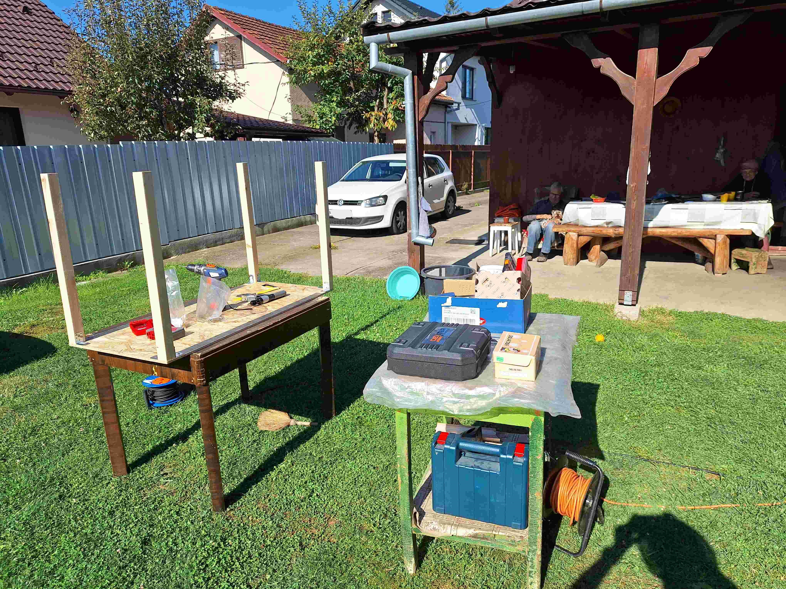
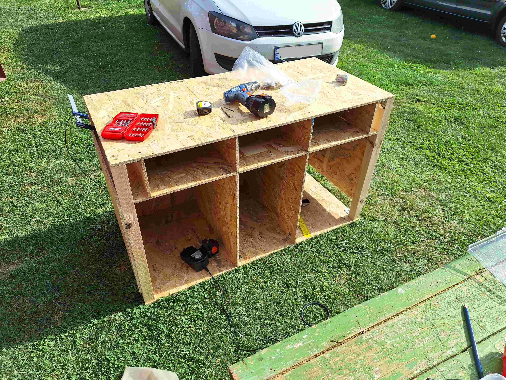

Seeing how long it takes to build a project, I began to look for ways to speed it up.
I reaslised I need to split the projects in two parts:
1. Design: I need to design all aspects of a project on the computer. It is much easyer to design and
simulate on a computer than to build, test and rebuild everything.
2. Production: After the design is ready and tested in simulations, it must be implemented in an
automated way, so that it requires as little time as possible and the process is repetable.
After researching methods for PCB production I chose milling because it requires no dangereous chemicals
and most of the fabrication process is automated.
The end goal of this project is a CNC milling station. Is should:
- Have a high enough precision for milling around DIP and SOIC packages
- Have safety elements implemented (emergency button, electrical safetys, ...)
- Be mobile (should have wheels for easy movement)
- Have space for all tools required in the production of PCB-s

Compared to other projects that I worked on, this one consists mainly on mechanical
design and phisically building
the CNC. So, this chapter of the description is the longest.
Design
I began working on the CNC in the spirit of the idea presented above: first design and then build.
For mechanical design I used a student OnShape account.
Designing the station took a rather long time, about 4 months. But, after these 4 months I was ready to build,
and the digital model of the station allowed me to measure any distance on any part. Building was much
easier this way.


One of the biggest chalanges I encountered while designing this station was finding parts and components
that both fit together and are available commercially (and don't break the bank). The final shopping list
was very long, and I had to both order and phisically buy parts from at least 5 speciality shops.
The chassis is made of alluminum profiles for strength and ease of assembly.
Because milling PCB-s does not put a lot of stress on the milling head, I opted to use pairs of guiding
rods as opposed to linear guides, because the rods are cheaper.
The more complex parts are made of wood because wood is easier to machine and I don't really have tools for
working in metal. The only metal parts that I made myself are the mounts for the stepper motors,
because the way I attached the motors is not standard and I had to make my own mounts.


Production and Assembly
At the time of building this machine I was (and still am) part of the "Bright Students" program at Bosch Cluj
Plant. So I had time to build this machine only on saturdays. With 1 day a week, building the station lasted
the whole summer.
But with each passing week the machine was closer to being ready.
Measuring, drawing, cuting, drilling, screwing, unscrewing, adjusting and fixing, slowly but surley each
pice was ready and assembled.


After a long summer and a lot of work, the CNC was assembled.
Mechanically, the CNC was ready, but the controll circuitry was not. Also, the CNC was not yet a CNC station.
So, before talking about the controll circuitry, I'l talk a bit about the bench that I built for the CNC.
While working at Bosch Cluj Plant I saw just how convinient it is for each tool to have it's place,
and for each table or larger station to have wheels for easy transportation. That is why I wanted
to build a CNC station, not just a CNC. And is also the reason my station has wheels.

